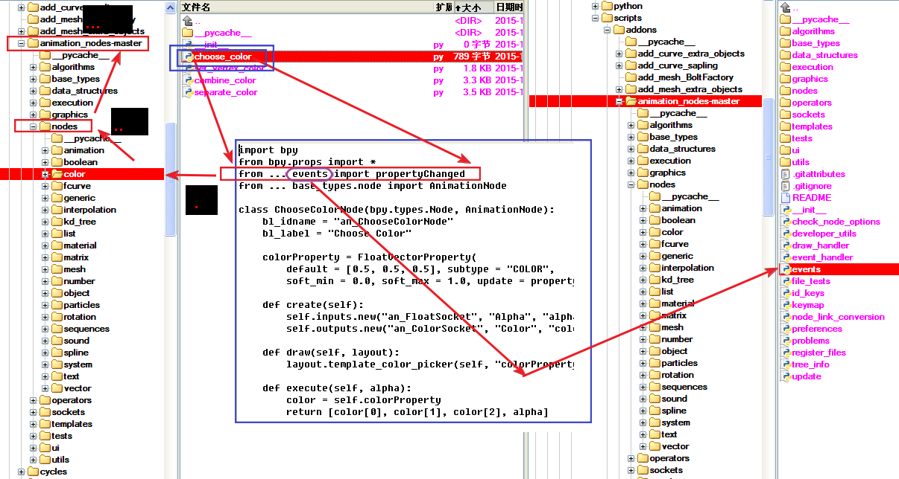

2015-10-20 [TUESDAY]
>>> GO UP|
一个大的应用或程序可以切分为一些小的组件，方便管理和分别处理，同时模块之间可以很好的沟通，这就是模块的作用，和现实中的不同公司、部门的道理是一样的。 |
加载简单的import即可。 import A.B.C #A在搜索路径下 import只能导入模块，不能导入模块中的对象（类、函数、变量等）。如一个模块A（A.py）中有个函数getName，另一个模块不能通过import A.getName将getName导入到本模块，只能用import A。如果想只导入特定的类、函数、变量则用 from A import getName 即可。
加载路径sys.path python在此路径在搜索模块。如果需要可以添加sys.path.apend 模块查询sys.modules
重载在python3.0中reload函数不是内置的，需要加载 from imp import reload reload(module) |
|
模块包含：
[Index] |
__path__一个带有init文件的文件夹就是一个模块，当这个模块导入后，就有了__path__属性,注意，普通文件的模块是没有这个属性的。 > > > import D > > > D.__path__ > > > D.__path__ ['D:\\百度云同步盘\\LxNote\\blender\\5-建筑表现\\node\\python深入理解\\python模块管理思路.files\\D'] 这个__path__变量可以自定义，比如D.__path__="C:\\",这样，包内的模块就回去修改后的目录寻找。 直接使用__path__变量
#D\__init__.py
def ppp():
print(__path__)
> > > import D > > > D.ppp() ['D:\\百度云同步盘\\LxNote\\blender\\5-建筑表现\\node\\python深入理解\\python模块管理思路.files\\D']
__all__这个和__path__类似，可以手工修改，修改后，当用 from D import * 的时候，只会导入__all__指定的部分。 在Sound/__init__.py中, 写一行: __all__=['Effects','Filters','Utils'] 则: > > > from Sound import * > > > dir() ['Effects','Filters','Utils','__builtins__','__doc__','__name__']
|
|
 如下几行在__init__.py文件中： from . import developer_utils from bpy.props import * from . id_keys import IDKeySettings from ... events import propertyChanged from ... base_types.node import AnimationNode #base_types为文件夹或者说包 . 表示当前目录 .. 上级目录 .. 上2级目录
|